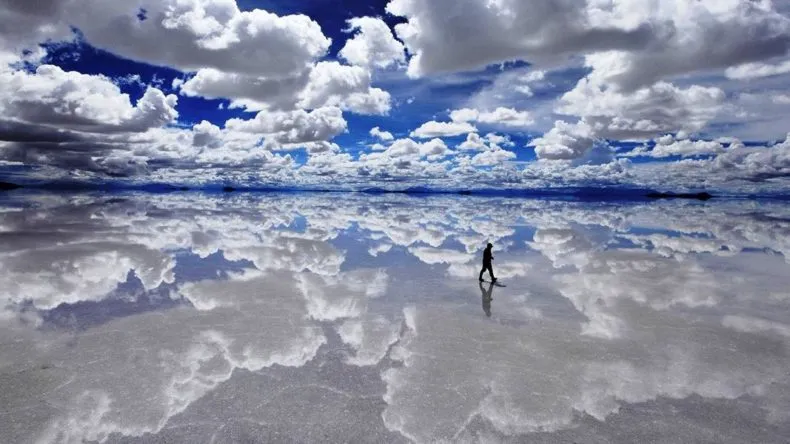
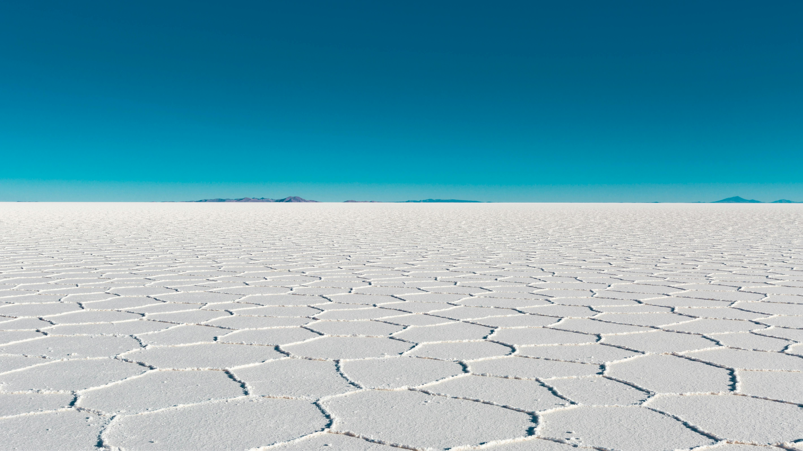

📍 Salar de Uyuni!
Imagine acordar num lugar onde o chão vira céu. Você abre a porta, dá dois passos… e vê nuvens embaixo dos seus pés. Não é filtro. Não é edição. É REAL. Isso é o Salar de Uyuni - BO.
📍 Salar de Uyuni – Um espetáculo natural na Bolívia
Localizado no sudoeste da Bolívia, o Salar de Uyuni é o maior deserto de sal do mundo e um dos destinos mais impressionantes da América do Sul. Com mais de 10 mil km² de extensão, esse imenso mar branco encanta viajantes pela sua beleza surreal e paisagens que parecem saídas de outro planeta. Durante a estação seca, o solo forma padrões geométricos perfeitos, criando um cenário único para fotos. Já na época das chuvas, uma fina camada de água cobre o salar e transforma o local em um gigantesco espelho natural, refletindo o céu de forma espetacular — um verdadeiro fenômeno da natureza. Além da paisagem, a região oferece experiências inesquecíveis, como visitas à Ilha Incahuasi, repleta de cactos gigantes, hotéis construídos inteiramente de sal e passeios de jipe pelo altiplano boliviano, passando por lagoas coloridas e formações rochosas impressionantes. O Salar de Uyuni é mais do que um destino turístico: é uma experiência única, capaz de despertar admiração e conexão com a grandiosidade da natureza. Um lugar perfeito para quem busca aventura, tranquilidade e cenários inesquecíveis.
📍 Você não vai só “ver” — você vai sentir outro planeta
Não existe árvore. Não existe prédio. Não existe barulho. Só um branco infinito e um céu absurdo. Seu cérebro demora alguns minutos para aceitar que aquilo é a Terra. É uma daquelas experiências que reprogramam a memória: “Ok… então o mundo também pode ser assim.”

📍 Suas fotos vão parecer mentira (e todo mundo vai perguntar)
Enquanto todo mundo posta: 📍 praia 📍 torre famosa 📍 restaurante bonito Você posta: 📍 uma pessoa flutuando no céu 📍 um carro navegando no infinito 📍 você andando sobre nuvens

Conheça a World Travel
Na World Travel, acreditamos que viajar vai muito além de conhecer lugares — é sobre viver experiências, criar histórias e colecionar momentos inesquecíveis que ficam para a vida toda. Somos uma equipe apaixonada por explorar o mundo e por conectar pessoas a destinos extraordinários. Cada roteiro é pensado com cuidado, atenção aos detalhes e profundo respeito pela cultura local, garantindo viagens autênticas, seguras e perfeitamente organizadas. Trabalhamos com parceiros selecionados em diversos países para oferecer serviços de alta qualidade, desde hospedagens confortáveis até experiências exclusivas que fogem do comum. Nosso compromisso é transformar cada viagem em algo único, seja uma escapada de fim de semana, uma lua de mel, uma aventura em família ou uma jornada de autodescoberta. Mais do que vender viagens, queremos construir relações de confiança e acompanhar você antes, durante e depois do embarque, oferecendo suporte completo e personalizado. Seu sonho é o nosso próximo destino. World Travel — conectando você ao mundo.
Dicas de Viagem – World Travel
Viajar é muito mais do que visitar um novo lugar — é viver experiências, conhecer culturas e criar memórias para a vida toda. Pensando nisso, a World Travel preparou algumas dicas essenciais para que sua jornada seja segura, tranquila e inesquecível. Antes de embarcar, pesquise sobre o destino: clima, costumes locais, documentos necessários e moeda. Um bom planejamento evita imprevistos e permite que você aproveite cada momento com mais tranquilidade. Organize seus documentos com antecedência, faça cópias digitais e mantenha tudo sempre acessível. Contratar um seguro-viagem também é fundamental para garantir suporte em situações inesperadas. Leve apenas o necessário na bagagem. Viajar leve facilita deslocamentos e torna a experiência muito mais confortável. Não se esqueça de separar itens essenciais, como medicamentos, adaptadores e carregadores. Durante a viagem, respeite a cultura local, experimente a gastronomia típica e esteja aberto a novas experiências. Muitas vezes, os melhores momentos surgem fora do roteiro planejado. E, claro, conte sempre com a World Travel para ajudar você em cada etapa do caminho. Estamos aqui para transformar seu sonho de viajar em realidade, com segurança, conforto e muita inspiração. Boa viagem! ✈️🌍